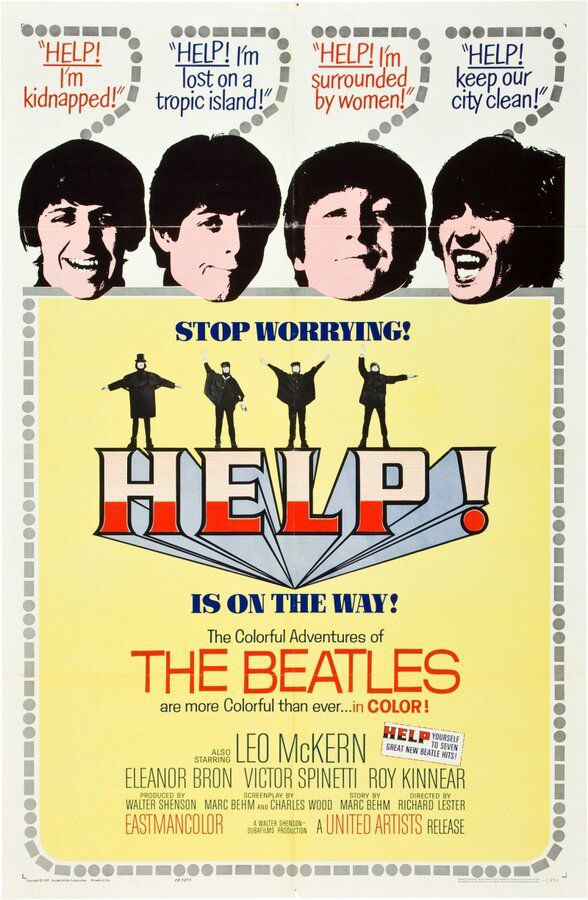
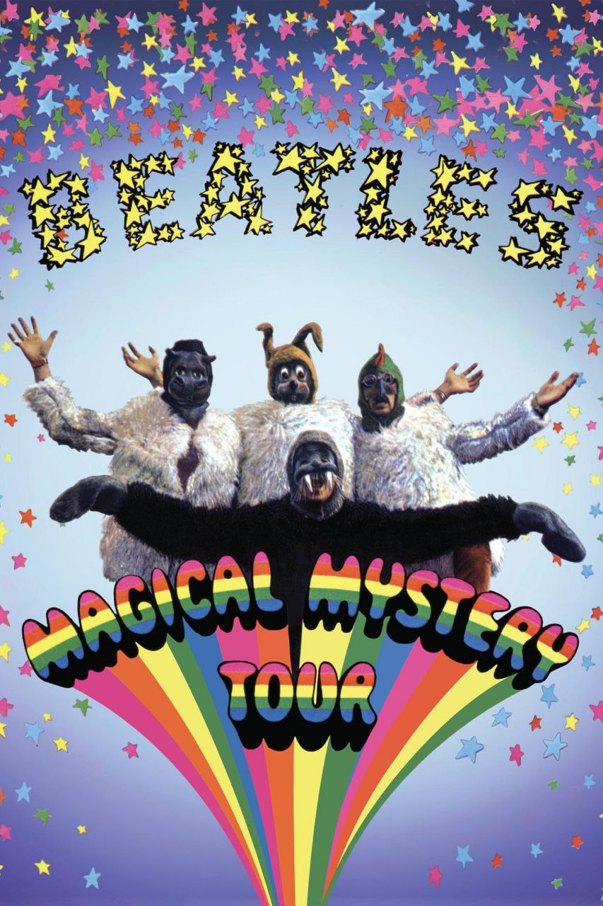
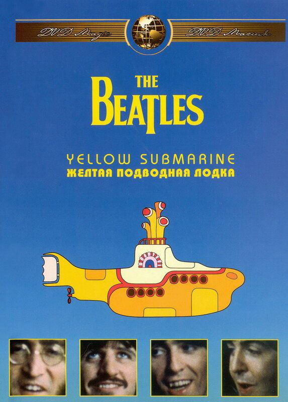

| Год | Русское название | Оригинальное название | Афиша | Примечание |
|---|---|---|---|---|
| 1964 | Вечер трудного дня | A Hard Day’s Night |  |
Х/ф |
| 1965 | На помощь! | Help! |  | Х/ф |
| 1967 | Волшебное таинственное путешествие | Magical Mystery Tour |  | Х/ф |
| 1968 | Желтая подводная лодка | Yellow Submarine |  | Х/ф |
| 1970 | Пусть будет так | Let It Be |  |
Д/ф |